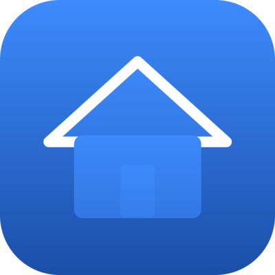
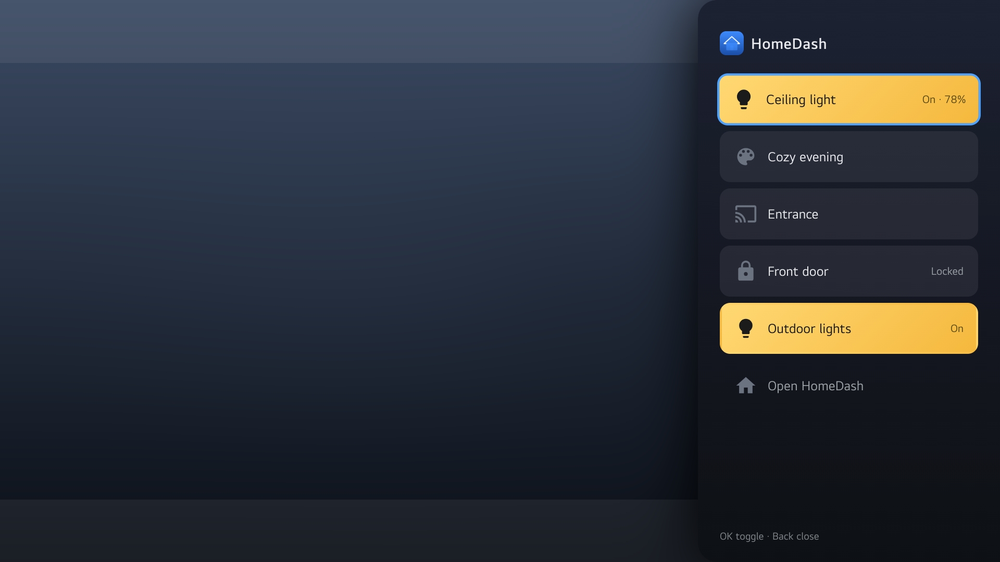
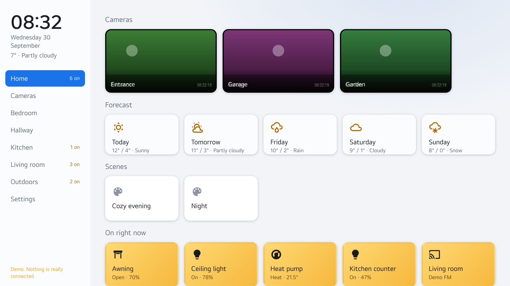

HomeDash for webOS
Home Assistant on your LG TV.

HomeDash shows your whole Home Assistant on the TV: rooms, cameras and every entity type, controlled with the remote. Nothing is tied to a particular installation. Rooms, names and state texts come from the Home Assistant you sign in to, in your TV's language.
What it does
Rooms and everything in them
Lights, switches, climate, covers, locks, media players, sensors, scenes and more. Short press toggles, long press opens brightness, color, temperature, volume, modes, alarm PIN and 24-hour history.
Cameras
Live view, camera wall with several cameras at once, picture-in-picture, PTZ control for Frigate and ONVIF cameras, and the latest images from image entities.
Notifications
Home Assistant can show a card with text, a live camera image and buttons on the TV. In the developer build the card is drawn on top of whatever you are watching.
Home screen
Forecast, scenes, favorites and everything that is on right now, with the number of active devices per room.
Screensaver
Cameras sliding by with the clock and the weather, or a clock only. Starts after a chosen time or on request from Home Assistant.
Made for the remote
Arrow keys, OK and Back do everything. Color and number buttons can be mapped to lights, scenes or cameras.
Sets up Home Assistant for you
From Settings the app adds the TV to Home Assistant, creates the scripts and installs automation blueprints, so notifications work without writing YAML.
Themes and languages
Five themes and twelve languages. Home Assistant's own texts follow the TV language, so states read correctly in any language Home Assistant supports.
Screenshots







Getting started
- Install the app from the LG Content Store, or install the package from GitHub with LG's developer tools.
- Start it. The app finds Home Assistant on your network by itself.
- Sign in on the TV, or scan the QR code and sign in from your phone.
- Open Settings → Home Assistant to create the notification scripts and blueprints.
No Home Assistant yet? Choose Try the demo on the first screen to explore the app with a built-in example home.
Two builds
The store build runs in a regular window and is what the LG Content Store distributes. The developer build on GitHub uses an overlay window, so notifications, a pinned camera and the quick menu can be drawn on top of whatever the TV is showing. LG does not allow overlay windows for store apps, so that build is installed through Developer Mode.
Privacy
- The app talks only to your own Home Assistant, on your own network or through the address you enter. There is no server run by the app's author.
- Your sign-in is stored on the TV as a Home Assistant refresh token, the same way the official Home Assistant apps do it. Your password is never stored. Sign out in Settings to remove it.
- Settings such as favorites and hidden entities are stored on the TV and, if you choose, in your Home Assistant user profile so they follow you to other TVs.
- The app collects no analytics, sends no telemetry and shows no advertising.
- While the QR code is shown, the TV runs a small web server on your local network so your phone can send the sign-in details to the TV. It stops as soon as you are signed in.
Support
Questions and bug reports go to GitHub issues. The source code is available under the MIT license.